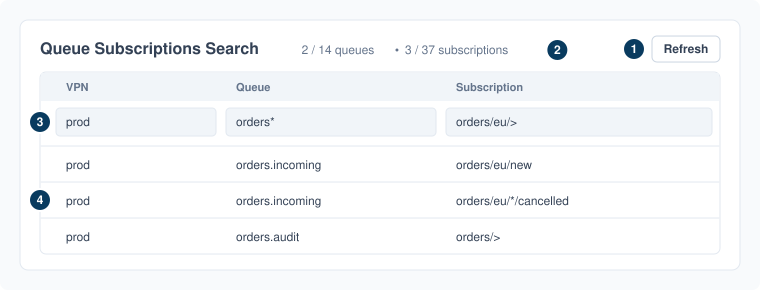

Find out which queues subscribe to a topic. The page lists every topic subscription on the queues you can see, and narrows the list as you type.
Queue Subscriptions needs the SEMP connection from the Connections page. Until SEMP is connected, the page shows Connection Required in place of everything below.
The list holds one row for each subscription: the Message VPN, the queue, and the topic the queue subscribes to. A queue with no topic subscription is not listed. If you signed in to a gateway, the list holds only the queues you are entitled to see, in the Message VPNs you can pick for the broker you are connected to.

While all three boxes are empty the table shows no rows and asks you to Type in any column above to start searching.
| Column | How your text is matched |
|---|---|
| VPN and Queue | As any part of the name, in any letter case: def finds default. Put * in the box and your text is matched against the whole name instead, with * standing for any run of characters. |
| Subscription | As a topic, the way Solace compares topics. Your text and the stored subscription may both use the Solace wildcards: * for one level, and > for one or more levels at the end. A row is shown when the two could match the same topic. |
| In the box | You type | It finds |
|---|---|---|
| VPN or Queue | def* | Names that start with def. |
| VPN or Queue | *ult | Names that end with ult. |
| VPN or Queue | def*ult | Names that start with def and end with ult. |
| Subscription | orders/new | A queue subscribed to orders/*. |
| Subscription | orders/> | A queue subscribed to orders/new/details. |
| Subscription | topic | A queue subscribed to *. |
The loaded list is kept in memory for as long as you stay connected. Changing a filter never contacts the broker again.
Press Refresh to fetch the list again, for example after a queue or a subscription was added or removed. The list is dropped when the SEMP connection drops; press Load again once you are connected.